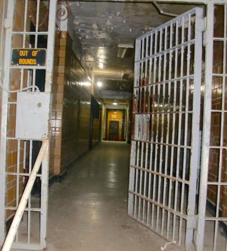
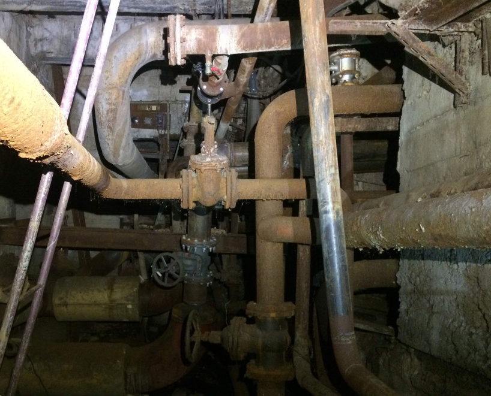
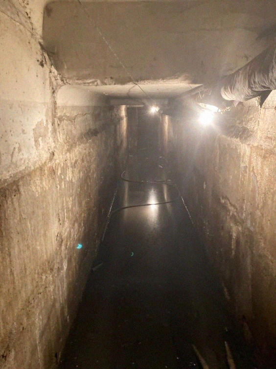

Level 3 is the 4th level of the Backrooms. It is one of the first few levels that wanderers usually encounter.

A hallway down Level 3 (brightened for viewing convenience).
Entities:
Level 3 has many different entities present, making it difficult to stay in. Tar,
Hound, Facelings , Wretches, Skin-Stealer,
Smiler, and Clump dwell here and prey on those unlucky enough to be seen by them.
Entrances And Exits:
Entrances
Unlocked doors on Level 2 commonly lead to Level 3.
Elevators on Level 4 and Level 5 can lead back to
Level 3.
Entering bunkers on Level 10 can sometimes lead to Level 3.
Buildings on Level 11 that have a similar look to Level 3 on the inside can sometimes teleport you to it.
Rusty pipes found inside level-13 may lead to Level 3 should you make contact with them.
Level 3 is a series of long, dark, winding corridors with rooms, roaring machines and lots of cables. The corridors are very narrow, and average-sized wanderers will have to bend over or walk sideways to get through some of them. The walls and floors are brick and concrete, and there are often places covered with gray or brown tiles. In some places, a large number of cables go into narrow shafts deep into the floor or ceiling. It is not known where they lead or if they lead anywhere at all. There was a report of a descent into one of the mines, but it did not give a clear answer.
One of the level's distinguishing features is the prison bars separating the corridors. Despite their appearance, they are all very sturdy, and if they don't open on their own, you shouldn't try to open them by force. It is also not necessary to saw through the deadbolt, as the noise will attract all the entities in the area.
The rooms on Level 3 are very different in terms of functionality from each other, there are switchboards, transformer rooms, generator rooms, control panels and just utility rooms. At the same time, it is not uncommon that the equipment of neighboring rooms is not connected with each other. In them you can find various devices and tools that can be useful in the Backstage, such as current rectifiers (can be useful on levels where the mains voltage jumps), batteries, hand tools, knives, mounts. The latter is probably the most useful thing to have here. Unfortunately, food is not found in the rooms.
Due to the running machines, it is quite noisy and hot here, as in Level 2. The temperature ranges from 20 to 40°C. There are rooms where the temperature exceeds 60°C, usually closed generator or transformer rooms.
It is recommended that you only enter Level 3 if you are properly prepared to defend yourself from whatever is lurking in the corridors with you, as help will not come to you if you need it.
Exits
Elevators on Level 3 can usually lead to Level 4 and Level
55.
Numerous groups have consistently attempted to set up bases in Level 3 in order to make use of its abundant assets. A large proportion of these attempts fail merely days after they are established, as entities can and will attack vulnerable bases that are not prepared for the onslaught. The high failure rate should serve as a warning-do not attempt to settle in Level 3 unless you have the resources, manpower, and tenacity to do so.
Around 300 operatives permanently stationed here, and a large number of others lodge here, oftentimes seeking refuge from entities which are contained within the level.
Originally constructed by M.E.G. operatives out of makeshift bricks which were made of shredded toothbrushes, shoelaces, toy plastic horseshoes, and bottles of glue, all found in level 3 itself. The inhabitants of the base armed themselves with makeshift slings which were made of electrical cables and rubber bands bound to bones of some entities they had previously slain. They used capsules of
Liquid Pain as ammunition for these slingshots.
Open to trading.
Commonly attacked by swarms of entities.
The most well-powered base in the Backrooms, and is also targeted by humans for that reason.
Used as a primary storage facility for the B.N.T.G.
A multitude of resources belonging to the B.N.T.G. are stored in it, all prepared for trading in other levels.
Open to trading, but their trades have been known to be unreasonably high.
Around 150 permanent members, with the majority of visitors staying in for less than an hour due to the speed at which the B.N.T.G transfers resources between levels.
Another dead end! I walked for hours, hoping to find an exit to Level 3 and then to the offices. Further down, the pipes get even bigger. I should have turned around when the lights finally went out. I hope I'm still alone in this long hallway.

Not always long hallways lead to an exit.
02/uoa1920
Hot sludge all over the floor. It's almost impossible to breathe.

It's the Tar, don't go through it!
02/hjq1092
I'm saved! I closed the door right in front of her nose. While I'm resting, I'll describe what I've done. While I was looking for a way out of the level, around the next corner I saw a woman walking slowly away from me. I didn't want to yell, so I quickly followed her. When I was close, she turned and asked what was wrong with me. The skin on her face hung like a Halloween mask, and her mouth was full of tiny teeth. A room with a latch on it popped into my mind, and I raced for it. The room wasn't close, and I was almost exhausted by the time I got there and locked myself in. She kept yelling nonsense about what was wrong with me and how she wanted me to leave her. She's pounding on the door like a 100-pounder. But she won't break it down. I'll wait a day until she gets bored and leaves.
This user sent another message asking for help. No further contact has been made. Unfortunately, the entities are willing to wait as long as they like, knowing that the wanderer is in hiding.